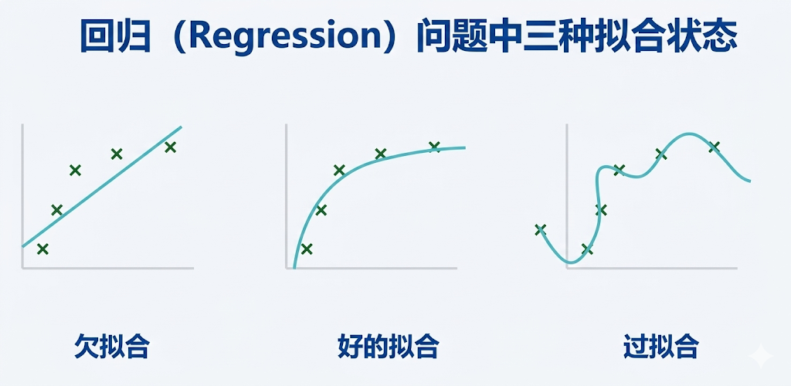

"在智能系统中，因果关系是不可或缺的，它使我们能够理解世界是如何运作的，以及我们的行为将如何影响世界。"--朱迪亚・珀尔（Judea Pearl）
大多数想要学习深度学习是算法的人或多或少都听过但不限于以下晦涩的名词：超参数、学习率、前向传播、反向传播、梯度下降、batch_size、epoch。。
听完之后，一头雾水！最后得出一个结论：AI太难了，我不是学AI的料子。。
然后对AI 甚产生了一些刻板形象："这么多名词，故弄玄虚！"
下面，我就要帮大家揭开"AI"神秘的面纱，用最简单的语言来阐述深度学习原本朴素的样子。
首先还是回到我们最初提到的"学生期末考试分数"表格：
| 序号 | 学习时刻 (小时/周) | 出勤率 (%) | 作业完成率 (%) | 期末成绩 (分) |
|---|---|---|---|---|
| 1 | 10 | 90 | 85 | 80 |
| 2 | 8 | 80 | 70 | 70 |
| 3 | 12 | 95 | 90 | 88 |
| 4 | 6 | 70 | 60 | 60 |
| 5 | 15 | 98 | 95 | 92 |
| 6 | 5 | 60 | 50 | 55 |
| 7 | 9 | 85 | 80 | 75 |
| 8 | 13 | 92 | 88 | 85 |
| 9 | 7 | 75 | 70 | 68 |
我们的目标是：通过寻找数据中蕴含的内在规律，并且利用这种规律来预测学生的成绩。
而表格中的这些变量之间的关系是什么，凭借生活经验，我们就能够大概定性："学习时刻越久，出勤率越高，作业完成率越高，期末成绩就会越好。"
做出以上的定性分析并不难，但是我们怎么做定量分析呢？即"学习时刻、出勤率、作业完成率"这些自变量，和最重要的"期末成绩"这个因变量之间的确切关系到底是什么？
由于是有关于自变量和因变量之间的关系问题，且其中任意一个自变量的变化都会导致因变量的变化，很容易想到初中的时候学习的数学知识，于是我们可以使用多元函数来表达（即多个未知数）：
$y = k_1 x_1 + k_2 x_2 + k_3 x_3 + b$
或者我们使用 ：$y = w_1x_1 + w_2x_2 + w_3x_3 + b$
来表示。
其中 $x_1$ 代表学习时刻， $x_2$ 代表出勤率，$x_3$ 代表作业完成率，$y$ 代表期末成绩，$w_1、w_2、w_3$ 都是权重，b是偏置。
这样将一个具体问题抽象为数学问题的思考过程，就是建模的过程，甚至你可以理解为函数 $y = w_1x_1 + w_2x_2 + w_3x_3 + b$ 就是模型！
于是我们的问题就变得更简单具体了，只要我确定了权重 $w$ 和偏置 $b$ 具体是什么数值，也就代表找到了自变量和因变量之间的"确切关系"。你甚至可以理解为训练完成了。。
这个问题看起来很难。🤔不过我们能不能采用最笨的办法，通过枚举的方法来确定，比如我们假设 $w_1=1，w_2=2，w_3=3，b=4，$ 然后分别代入这 9 行数据到 $y=1⋅x1 +2⋅x2 +3⋅x3 +4$ ，看看能不能"拟合"。
但是一代入，发现拟合不了，第一行都拟合不了：
10*1 + 90*2 + 85*3 + 4 = 449，449≠80
看来得重新确定一组参数，我们对每个参数都加 1 试试：$w_1=2，w_2=3，w_3=4，b=5。$
然后继续将第一行数据代入，发现还是无法拟合😮💨....那么问题来了：如果我们像这样不断去尝试不同的参数组合，最终能不能找到一组更合适的参数，让这个函数对这些数据的预测尽可能接近真实值呢？
我们这里先纠正一下"9行数据"这个说法，从而引出数据集和样本的概念。
在AI领域，表格中的一行数据称之为一个"样本"，多行数据的集合称之为"数据集"，用于训练阶段的数据集称之为"训练数据集"，训练结束之后用于验证分类/预测效果的数据集称之为"验证数据集"，而大规模应用模型之前进行测试的数据集称之为"测试数据集"。
所以"9行数据"的专业表述是"9个样本"。
好我们继续，所以只要给足够的时间，让机器不断的去枚举，最终是有可能找到这样一组参数的，能够拟合的了这9个样本数据的。但是假如不止 9 个样本数据，有 90 个样本，90000 个样本呢？
存在这样一组参数，能够 100% 拟合得了 90000个样本数据吗？
很难100%拟合，所以最终我们只能妥协，找到一组差不多，能够拟合大部分数据的参数，我们可以从下面直角坐标系中的三种拟合形态来看可以得到一个直观的解释：

三幅图中的点的位置全都一样，但是曲线拟合的程度却是不同的，第一幅图太简单，很多点都没有照顾到，属于"拟合不足"；第三幅图虽然几乎穿过了所有点，但它为了照顾每一个点，把曲线弯得过于复杂了；
相比之下，第二幅图虽然没有经过每一个点，却抓住了数据整体的变化趋势，所以通常会是更合适的选择。
为什么第二幅图更合适呢？因为我们训练模型的目的，并不是死记住眼前这几个样本，而是希望它面对新数据时也能判断得比较准。
第二幅图只拟合了绝大多数点，虽然有些点没有落在曲线上面，但是几乎能够落到了曲线上，第三幅图看起来对当前数据"记"得最牢，但恰恰可能因为记得太死，导致一旦来了新数据，反而表现不好，这种现象就叫做过拟合。
比如我们现在通过这 9 个样本数据已经确定函数曲线为第二幅图，那么第9个样本数据还能落在曲线附近吗？可能可以，但如果是第 10 个样本数据呢？第 100 个样本数据呢？数据越来越多，落在曲线外的点的数据就也会越来越多，准确率就会下降。
拟合的差，专业的词汇叫做"泛化性"差，泛化性越强代表拟合的越好。
我们说找到一个拟合的差不多的函数就好了，不要"过拟合"，也不要"欠拟合"，但是怎么评价这个"差不多"？差多少才行？
比如还是以当前这批样本数据为例，我们假设 $w_1=1，w_2=2，w_3=3，b=4$ ，然后分别代入得到一个新的值 $y'$，我们这个时候给表格里面加一列，表示当权重参数等于 $w_1=1，w_2=2，w_3=3，b=4$ 的时候，函数计算出来的值：$y'$
如果把这个函数看作一个"极简"的预测模型，用来预测学生成绩，那么计算出来的这个 $y'$，就可以看作模型的预测值。英文名为Predict，通常记作 $\hat{y}$ ，有些地方也用 $p$ 来表示。如下表的预测期末成绩 y'，真实的期末成绩用y表示：
| 序号 | 学习时刻 (小时/周) | 出勤率 (%) | 作业完成率 (%) | 期末成绩 (分) | 预测期末成绩 (y') |
|---|---|---|---|---|---|
| 1 | 10 | 90 | 85 | 80 | 82 |
| 2 | 8 | 80 | 70 | 70 | 72 |
| 3 | 12 | 95 | 90 | 88 | 87 |
| 4 | 6 | 70 | 60 | 60 | 62 |
| 5 | 15 | 98 | 95 | 92 | 91 |
| 6 | 5 | 60 | 50 | 55 | 54 |
| 7 | 9 | 85 | 80 | 75 | 77 |
| 8 | 13 | 92 | 88 | 85 | 86 |
| 9 | 7 | 75 | 70 | 68 | 69 |
现在问题就变成了怎么衡量预测值和真实值之间"差多少"的问题了，差多少的问题在 AI 领域专门有个名词用来描述，叫做："误差"，英文名为Error，表示模型预测的"糟糕程度"。
我们就用最朴素的方法来计算一下误差，因为拟合效果看的是整体，误差的计算也是看整体，所以我们这一批（共9个样本）数据，就是直接用 $y'$ 列的值对应减掉 $y$ 列的值的结果，取个绝对值，然后再累加，这样就得到了9 个样本数据的整体误差。
误差有很多计算方法，每行的 $y'-y$ ，再求绝对值，绝对值再累加是最简单的方法，这里介绍个比较科学的计算方法，就先还是求误差($y'-y$)，然后用每行的($y'-y$)²得到的结果全部累加再除以 8，这种方法叫做均方误差，它的好处是可以放大误差较大项，更能够找到问题所在。
讲到这里我们回顾一下我们的目标。我们的目标是：通过寻找数据中内在规律，并且利用这种规律来预测学生的成绩。
通过上面的讲解，我们的求解问题的方法变得越来越清晰了：
（1） 首先我们建立一个能够表示数据内在规律的函数，这个函数有好几个未知参数的函数，这个函数就是我们的模型。
（2） 于是问题就变成了求解模型中未知参数，我们使用最笨的方法，先把所有参数设置为 0，然后通过调整参数的大小（可以加减任意值），来拟合所有数据。
（3） 最后，我们还需要一个标准来判断模型现在"好不好"，这个标准就是损失函数：损失越小，通常说明模型的整体预测效果越好。
这三个步骤其实就是 AI算法的核心，也是后续理解训练思想的核心。
后续我们按照训练框架的一般步骤来梳理上述过程，然后将引出前向传播、反向传播、梯度计算、参数更新、学习率的概念。
可以看到 AI并不神秘，AI算法也并不难，我们应该有信心可以学会AI，学好AI✊✊！
样本（Sample）：又称样例，是拥有对应标记的记录，由（记录，标记）对表示，代表了数据中的一个具体实例或观测。
数据集（Dataset）：用于分析或建模的数据的集合，通常以表格形式组织，每一行是一个样本（数据点），每一列是一个特征或变量。
特征（Feature）：数据集中除了标签列，其他都是特征列，我们平常说"维度"这个词的时候，也是从列的角度来说的。
拟合（Fitting）：指模型通过将数据传入，从而学习到数据中潜在规律（如数据的分布）的过程。
泛化性（Generalization）：指模型在未见过的的新数据上也能表现良好的能力，是机器学习模型的终极目标。
误差（Error）：指预测值或测量值与真实值之间的差异，用于衡量模型预测的准确性或测量精度。
均方误差（Mean Squared Error, MSE）：回归问题中常用的一种损失函数。它会先计算每个样本"预测错了多少"，再把这些误差平方后求平均。这样做的好处是，预测得特别离谱的样本会被放大出来，所以模型会更重视这些"大错"。
损失函数（Loss Function）：用于量化模型预测误差的一个函数，衡量模型预测值与真实值之间的差异程度，通过最小化损失函数来优化模型参数。